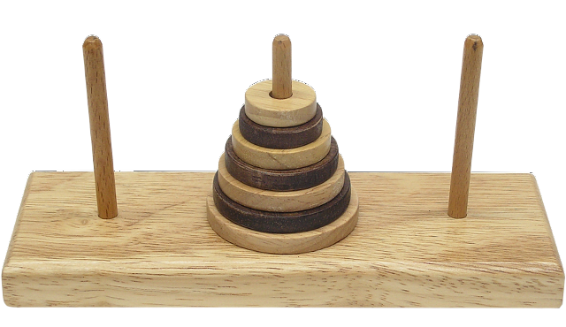
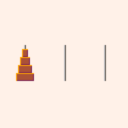

CAB301 Study Guide | 2023 Semester 1
Dr Maolin Tang | Notes for CAB301 at the Queensland University of Technology
Unit Description
Disclaimer
Everything written here is based off the QUT course content. However, there are at times parts of text that are taken from the QUT slides and most of the examples are directly from the course slides (these are referenced when done). This content is designed only for those currently studying an IT degree at QUT, do not share these resources with anyone outside of this community.
If any member of the QUT staff or a representative of such finds any issue with these guides please contact me at jeynesbrook@gmail.com and I will take these down without an argument. The last thing I want to do is cause any issues or damages to the QUT name or QUT resources. I am simply just trying to help students out with presenting the content in an easy to digest manor.
Disclaimer
All references used within this module can be found within References.
The quizzes used within this module are taken directly from the QUT slides, I do not claim them as my own work unless directly specified under the quiz.
Module 1.2
Table of Contents
Introduction
What is an algorithm?
What is an algorithm?
An algorithm is a sequence of instructions which can be followed to solve some computational problem. Due to algorithms being independent of a programming language, they can typically be implemented into any.
Pseudocode
Pseudocode is a way of writing the steps of an algorithm out in plain text without getting stuck by a specific programming language syntax.
Sometimes within pseudocode, we informally describe 'obvious' actions. For example, within the SelectionSort algorithm, we might just use the term 'swap' to describe the action.
Pseudocode notations
| Variables | Meaning |
|---|---|
| \(v \), \(w \), ... | Variable names |
| \(E \), \(F \), ... | Expressions |
| \(B \), \(C \), ... | Boolean values |
| \(N \), \(M \), ... | Integer-valued expressions |
| \(S \), \(T \), ... | (Compound) program statements |
| \(P \), \(Q \), ... | Procedure names |
| \(x \), \(y \), ... | Parameter names |
| 3.1425926, 'c', true | Primitive types |
| \(A[i] \) | Arrays / Vectors |
| \(\{4, ..., 10\} \) | Sets |
| Statements | Meaning |
|---|---|
| \((2v) + x \) | Expressions |
| \(P(x, y, ...) \) | Parameterised procedure declarations |
| \(P(E, F, ...) \) | Procedure calls |
| \(v \leftarrow E \) | Assignment |
| \(S \hspace{0.2em} T \) or \(S; T \) | Sequential composition |
| return \(E \) | Return statements |
| Conditionals | Meaning |
|---|---|
| if \(B \hspace{0.2em} S \) else \(T \) | Choice |
| if \(B \hspace{0.2em} S \) | If-then statements |
| Iterations | Meaning |
|---|---|
| while \(B \) do \(S \) | Iteration |
| for \(v \leftarrow N \) to \(M \) do \(S \) | Iteration |
| repeat \(S \) until \(B \) | Iteration (post-tested) |
Pseudocode Example
ALGORITHM ArrayMax(A[0..n - 1])
// Given an array A of length n >= 1,
// return the value of the largest number in A
max <- A[0]
for i <- 1 to n - 1 do
if A[i] > max
max <- A[i]
return max
Algorithm efficiency and algorithm analysis
Algorithm efficency
Algorithm efficiency is generally represented as a mathematical function which describes the resource requirements of the algorithm. These requirements describe the amount of data each algorithm must process before it finishes.
There are two main measures used to describe an algorithms efficiency:
- Time efficiency: A mathematical function which describes the amount of time an algorithm will take to finish in relation to its input.
- Space efficiency: A mathematical function which describes the amount of space, or storage, an algorithm must take to finish in relation to its input.
Algorithm analysis
Algorithm analysis is the process of determining how efficient an algorithm is.
Algorithm analysis is done independent of a language or machine. This is because the efficiency of an algorithm will change depending on the language implementation and processing power of the machine.
Algorithm analysis - An example
Let's take a look at an algorithm we've seen previously.
ALGORITHM ArrayMax(A[0..n - 1])
// Given an array A of length n >= 1,
// return the value of the largest number in A
max <- A[0] // c1
for i <- 1 to n - 1 do
if A[i] > max // c2
max <- A[i] // c3
return max // c4
In a worst case scenario, the computational time for this algorithm can be appoximated using the following mathematical function.
\[ T(n) = c1 + (c2+c3)(n-1)+c4 \]
where \(c1, ..., c4 \) are machine dependent, they will always have the same computation time.
Let's imagine we run this on some machine and time how long it takes to compute each expression.
- c1 = 3 micro-seconds
- c2 = 2 micro-seconds
- c3 = 3 micro-seconds
- c4 = 1 micro-seconds
\[ T(n) = 3 + (2+3)(n-1)+1 = 5n - 1 \]
We could then say:
- When \(n = 10\), \(T(10) = 5*10-1 = 49 \) micro-seconds
- When \(n = 100\), \(T(100) = 5*100-1 = 499 \) micro-seconds
- When \(n = 1000000\), \(T(1000000) = 5*1000000-1 = 4999999 \) micro-seconds
Why do we need to worry about the efficiency of an algorithm?
If computers are fast and memory cheap, why is there a need to worry about efficiency?
Consider an algorithm which can solve some problem of size \(n \) by processing \( 2^n \) cases, \(T(n) = 2^2 \). We now want to implement this on some computer which takes 0.000000005 seconds per case.
| Problem size | Solution time |
|---|---|
| 10 | 5.1 micro-seconds |
| 20 | 5.2 milli-seconds |
| 30 | 5.4 seconds |
| 40 | 1.5 hours |
| 50 | 9.3 weeks |
| 60 | 183 years |
| 70 | 1872 centuries |
| 80 | 192 million years |
The tower of Hanoi problem
How does the tower of Hanoi problem work?
Given \(n \) number of rods, and an initial rod stacked with disc incrementally getting smaller from bottom to top. The objective is to transfer the entire tower from one rod to another under the constraint that:
- You can only move one disc at a time
- You cannot place a disc on one smaller than itself
- After any move, all discs must be on a rod

Figure: Tower of Hanoi
Solving the tower of Hanoi problem
It's difficult to design an iterative algorithm to solve such a problem. This is where the power of recursive algorithms come into play.
ALGORITHM TowerOfHanoi(n, a, b, c)
// Find a solution to the problem of moving n disks from rod a to rod c
// using b as a temporary rod without violating the rules
//
// variables:
// - n: number of disks
// - a: starting rod
// - b: temporary rod
// - c: end rod
if n > 0
towerOfHanoi(n - 1, a, c, b)
move top disk from a to c
towerOfHanoi(n - 1, b, a, c)

Figure: Tower of Hanoi solution
The Tower of Hanoi - Code example
Here is an implementation of the algorithm to solve the Tower of Hanoi problem in C#
using System;
using System.Diagnostics;
class Program {
public enum Rod {
Source,
Intermediate,
Destination
}
public static void Main() {
Stopwatch sw = new Stopwatch();
Console.Write("Number of disks: ");
int diskCount = Convert.ToInt32(Console.ReadLine());
sw.Start();
TowerOfHanoi(diskCount, Rod.Source, Rod.Intermediate, Rod.Destination);
sw.Stop();
Console.WriteLine($"Computation time = {sw.ElapsedMilliseconds} milli-seconds");
}
public static void TowerOfHanoi(int n, Rod source, Rod intermediate, Rod destination) {
if (n > 0) {
TowerOfHanoi(n - 1, source, destination, intermediate);
Console.WriteLine($"Move the top disk from {source} to {destination}");
TowerOfHanoi(n - 1, intermediate, source, destination);
}
}
}
All code examples shown in the study guide will be in C# as this is the language taught in the unit. However, occasionally, you will see examples of Rust code along with C# code.
The engine that runs and formats these study guides only has support for runnable Rust code. Therefore, if I want to have runnable code, it needs to be in Rust.
Anytime there is Rust code, you can safely ignore it and just hit the run button to see the output as it will emulate (for the most part) what the C# code would output.
Be aware however, that it is very easy to timeout the program if the algorithm takes too long to run due to the constraints of the books engine.
use std::fmt; enum Rod { Source, Intermediate, Destination } impl fmt::Display for Rod { fn fmt(&self, f: &mut fmt::Formatter<'_>) -> fmt::Result { match self { Self::Source => write!(f, "Source"), Self::Intermediate => write!(f, "Intermediate"), Self::Destination => write!(f, "Destination"), } } } fn main() { // Change this value here let disk_count = 3; TowerOfHanoi(disk_count, &Rod::Source, &Rod::Intermediate, &Rod::Destination); } fn TowerOfHanoi(n: usize, source: &Rod, intermediate: &Rod, destination: &Rod) { if n > 0 { TowerOfHanoi(n - 1, source, destination, intermediate); println!("Move the top disk from {} to {}", source.to_string(), destination.to_string()); TowerOfHanoi(n - 1, intermediate, source, destination); } }
What are data Structures?
In computer science, there are many ways to store and organise collections of data, we call these collections data structures.
There are many data structures such as:
- Arrays
- Linked lists
- Binary trees
- Trees
- Graphs
- Hash tables
- etc...
No single data structure will work for all purposes, hence the need for many. This is why it's important that you can recognise the strenghs, weaknesses, limitations, and use cases for each data strcture.
Throughout the course, we will delve into different algorithms that will require the use of many different data structures. Overtime you will start to recognise and learn when to use each one.
Module References
QUT lectures & slides
Turing Machines | Brilliant Math & Science Wiki. (n.d.). Brilliant.org. https://brilliant.org/wiki/turing-machines/
Lambda Calculus | Brilliant Math & Science Wiki. (n.d.). Brilliant.org. https://brilliant.org/wiki/lambda-calculus/
Currying - HaskellWiki. (n.d.). Wiki.haskell.org. https://wiki.haskell.org/Currying
Von Neumann architecture - Architecture - Eduqas - GCSE Computer Science Revision - Eduqas. (n.d.). BBC Bitesize. https://www.bbc.co.uk/bitesize/guides/zhppfcw/revision/3
What is Von Neumann Architecture? - Definition from Techopedia. (2019). Techopedia.com. https://www.techopedia.com/definition/32480/von-neumann-architecture
Disclaimer
All references used within this module can be found within References.
The quizzes used within this module are taken directly from the QUT slides, I do not claim them as my own work unless directly specified under the quiz.